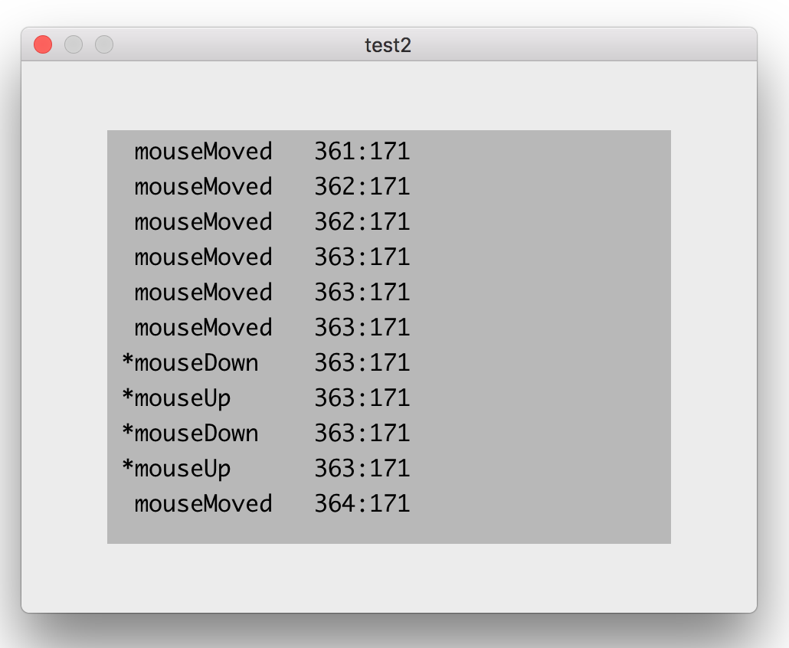
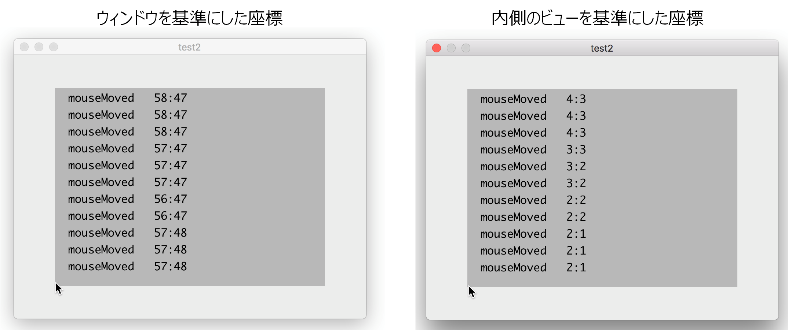

マウスイベントを補足する

画像をクリックすると動画になります。
基本的には、NSResponderクラスに属する"mouse"で始まるインスタンスメソッドをNSViewのサブクラスに実装すれば、ビュー上のマウスイベントを補足することができる。ただし、mouseMovedメソッドによりマウスの移動イベントを補足するためには、トラッキングエリア（NSTrackingAreaクラスのインスタンス）というものを作成しビューに追加する必要がある。
トラッキングエリアの設定
マウスイベントを補足するメソッド
サンプルプログラムのソースコード
NSViewのサブクラス
ビューの座標系を変更する
上記サンプルグログラムを実行すると、マウスイベントのlocationInWindowプロパティからマウスポインタが指す点を取得できるが、これはウィンドウを基準とした座標となる。この点を特定のビューの座標系に変換するには、NSViewクラスのconvertメソッドを使用する。
次のコードはマウスポインタの点を内側（自身）のビューの座標系に変換する。
取得した点（event.locationInWindow）を
ウィンドウ座標から（from: nil）
内側のビュー（self）を基準にした座標に変換せよ。
次のコードでも同じである
取得した点（event.locationInWindow）を
ウィンドウ座標と重なるビュー（window!.contentView!.superview!）から
内側のビュー（self）を基準にした座標に変換せよ。
